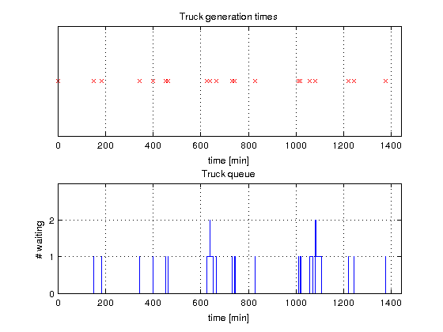
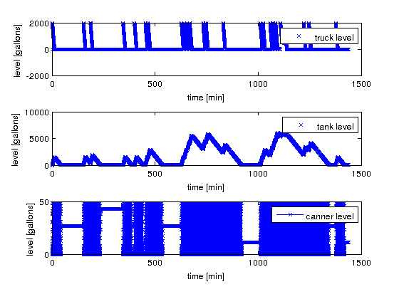

Plot and Statistics for Orange Juice Canning Hybrid Example
Analyses the combined discrete-continuous example from "Introduction to Simulation using SIMAN", page 451.
Contents
Call: analyse_orange_juice_canning(root_model,tstart,tend,tout,yout)
File: DEVSPATH/02-examples/hybrid/orange_juice_canning/analyse_orange_juice_canning.m
Plots
- Continuous trajectories of truck/tank/canner levels,
- Truck generation times,
- Truck queue


Statistics
From discrete variables
- Trucks generated, trucks emptied, truck generation times,
- Max/min/final queue length,
- Number of Palletes completed,
- Uptime of canning-process.
From continuous variables
- Max/min/average truck level,
- Standard deviation of truck level,
- Max/min/average tank level,
- Standard deviation of tank level,
- Max/min/average canner level,
- Standard deviation of canner level.
DEVS Tbx Home Examples Modelbase << Back